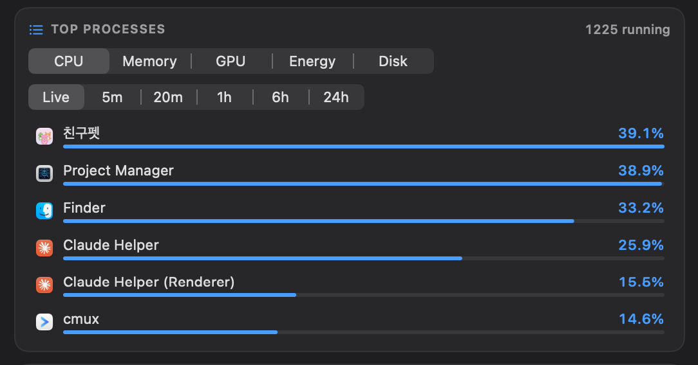
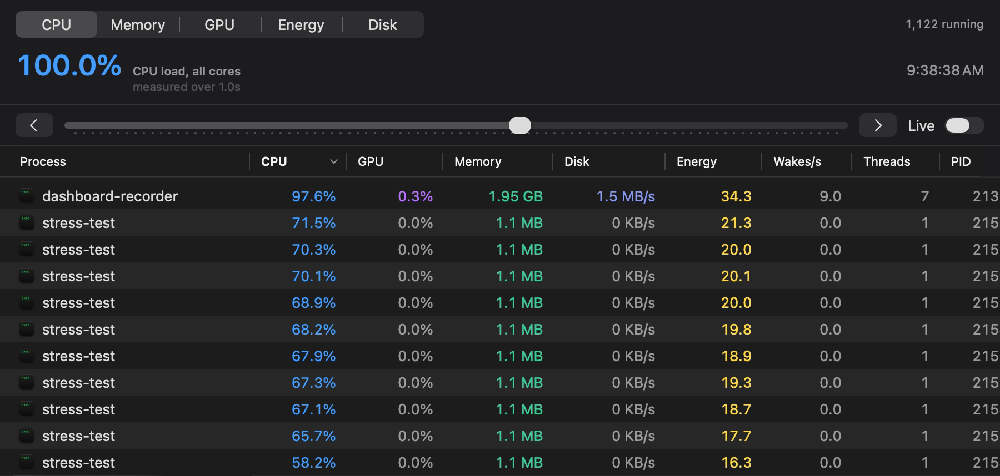
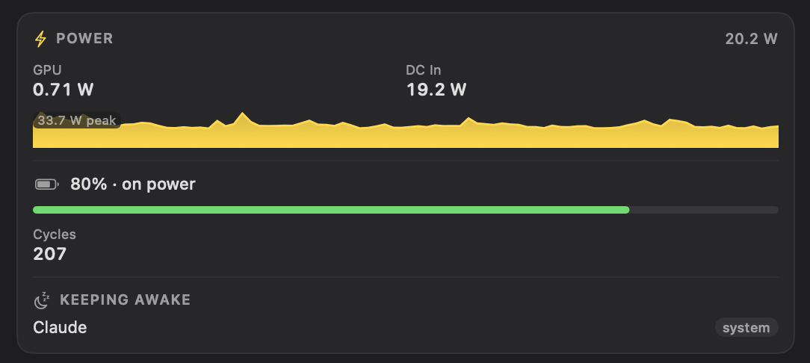

Your Mac is busy. Rex Boing shows you why.
A tiny T-rex runs in your menu bar and speeds up as your Mac works harder. Click it to see which app is using the CPU, GPU, disk and battery, how many watts your Mac is drawing, and what is keeping it awake.
$ brew install --cask rexyrex/tap/rex-boing
Free and open source. Signed and notarized. macOS 14 or later.

Everything behind the rex
A menu bar pet can tell you that your Mac is busy. Click this one for the reason.
See which app is using what
Top processes ranked by any resource, with helper processes folded into the app they belong to.
- CPU, memory, GPU, energy and disk
- Per-app GPU use, which most monitors leave out
- Live, or over the last 5 minutes to 24 hours

Click any graph to see what caused a spike
A window opens on the moment under the pointer and lists every process that ranked then, with CPU, GPU, memory, disk, energy and wakeups side by side. Arrow keys step through time.

Real watts, and who is keeping your Mac awake
Whole-machine power from the SMC, so the fans, display and SSD count, alongside GPU and DC-in power, battery charge and cycle count. Every app holding off sleep is named, with the reason it gave.

- Every corePer-core load split into efficiency and performance clusters, with live clock speeds.
- Every sensorCPU, GPU and battery temperatures, fans, and all 186 sensors on an M1 Pro.
- Memory pressure and swapApp, wired and compressed memory, swap use and page-in rates.
- Network and diskThroughput with history and session totals.
- Menu bar readoutsAny mix of CPU, GPU, memory, temperature, power, network, disk and battery.
- Light on your MacAbout 1.4% of one core at the default settings.
Sixteen rexes to choose from
Each one speeds up with load, turns orange past 70% and red at 100%, and does something bigger past two-thirds. All of them are drawn in code.
The 60-second tour
Nothing running but the app
Rex Boing is MIT-licensed and reads everything through unprivileged system APIs.
No helper, no sudo
Nothing installs alongside it, and it never asks for your password.
No network connections
Your numbers stay on your Mac. The app makes no connections at all.
No permission prompts
It asks for no permissions. Settings lists which data sources work on your Mac.
Where the numbers come from
| CPU, per core | host_processor_info |
|---|---|
| Memory and swap | host_statistics64, vm.swapusage |
| GPU use, per app | IOAccelerator statistics and accelerator clients in the IORegistry |
| Temperatures, fans, system power | AppleSMC user client |
| Component power and clocks | IOReport energy counters |
| Per-app CPU, memory, energy, disk | proc_pidinfo, proc_pid_rusage |
| Sleep assertions | IOPMCopyAssertionsByProcess |
Put a rex in your menu bar
Download the app, drag it to Applications and open it. Click the rex for the dashboard; right-click it for settings and the rex gallery.
$ brew install --cask rexyrex/tap/rex-boing
Requires macOS 14 Sonoma or later. Every reading on Apple silicon, most on Intel.